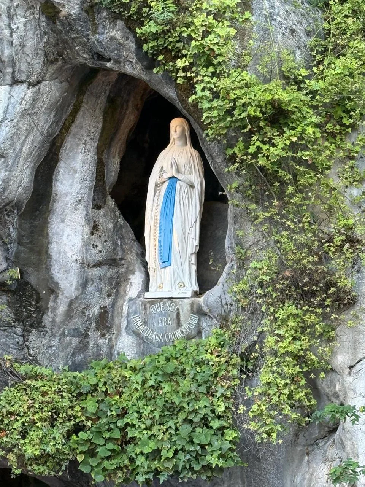
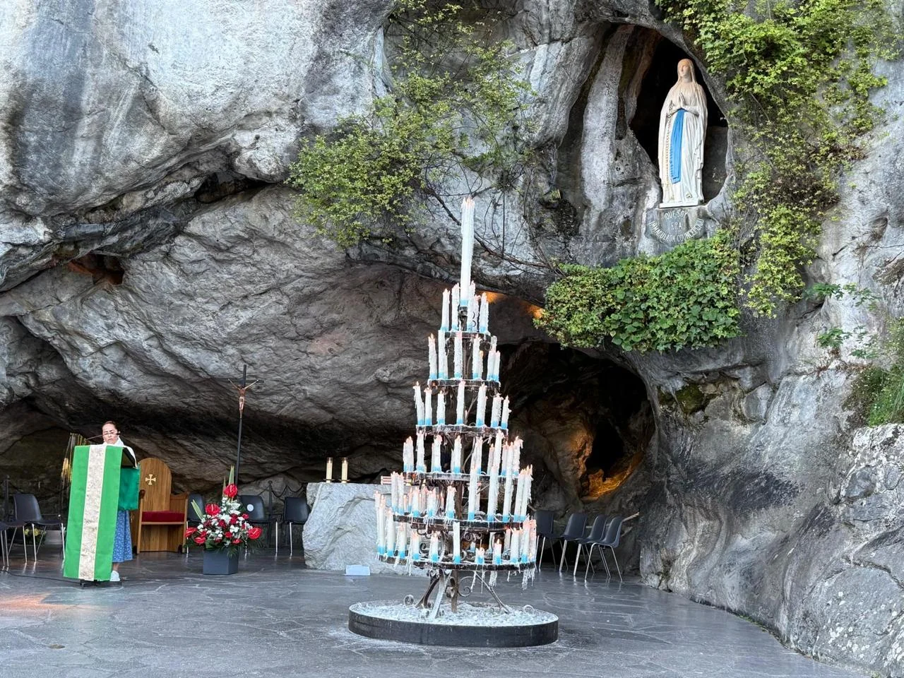

Lourdes, a small town in the foothills of the Pyrenees in southwestern France, is one of the most visited Marian shrines in the world. In 1858 Our Lady appeared there 18 times to Bernadette Soubirous, a 14-year-old girl, at the Grotto of Massabielle. Millions of pilgrims come every year to pray at the Grotto, drink and wash in the spring water, bathe in the baths and walk in the evening torchlight procession.
This guide explains what happened at Lourdes, what to do at the Sanctuary, when the processions take place and how we will spend three nights there on our 2027 Marian pilgrimage.
Lourdes on our 2027 Marian pilgrimage
- In Lourdes:
- three nights, October 18–21, 2027.
- What we will do:
- the Grotto, the basilicas, the Eucharistic and torchlight processions, the baths, Bernadette's footsteps, confession and the Rosary at the Grotto.
- Full pilgrimage:
- October 12–23, 2027 (12 days / 11 nights) through Fatima, Salamanca, Covadonga, Garabandal, Lourdes, Zaragoza and Ávila.
- Spiritual director:
- Fr. Juan Carlos Álvarez Pérez, with daily Mass.
- Departures:
- from any city in the United States or anywhere in the world. We help you coordinate flights and connections to join the group.
- Price:
- from USD 4,649 departing from the United States, flight included. Price valid until December 30, 2026.
What happened at Lourdes in 1858?
On February 11, 1858, Bernadette Soubirous, the daughter of a poor family of millers, was gathering firewood by the Gave River when she saw “a lady” in a hollow of the Massabielle rock. It was the first of 18 apparitions, which continued until July 16, 1858.
- February 25, 1858: Our Lady asked Bernadette to “go and drink at the spring and wash there.” Bernadette dug into the ground, and the spring that still flows at the Grotto appeared.
- March 25, 1858: when Bernadette asked her name, the Lady answered in the local dialect, “Que soy era Immaculada Councepciou” — “I am the Immaculate Conception.” Pope Pius IX had defined that dogma four years earlier.
- January 18, 1862: Bishop Bertrand-Sévère Laurence of Tarbes recognized the apparitions and authorized devotion to Our Lady of Lourdes.
Bernadette later joined the Sisters of Charity of Nevers, where she died in 1879. Pius XI canonized her on December 8, 1933. Because of the many sick people who come to Lourdes, February 11, the feast of Our Lady of Lourdes, is also the World Day of the Sick.

What to do in Lourdes: the Sanctuary step by step
The Sanctuary covers 52 hectares (about 130 acres) along the Gave River, with 22 places of worship. These are the essentials of a Lourdes pilgrimage:
Pray at the Grotto of Massabielle
The heart of Lourdes is the Grotto where Our Lady appeared. Pilgrims walk through it slowly, touching the rock worn smooth by millions of hands, and leave their intentions and candles. Mass is celebrated at the Grotto throughout the day, and the Rosary is prayed there every day.

Drink and wash in the water
The water of Lourdes is ordinary spring water, with no healing properties of its own. Its meaning comes from Our Lady's words, “go and drink at the spring and wash there.” You can drink it and fill bottles for free at the fountains near the Grotto, or take part in the water gesture with the volunteers.
The Lourdes baths
The baths (piscines) reopened fully in August 2024, after being closed since 2020. They are free and need no reservation. Volunteers explain how it works and give you a towel, and the immersion lasts only a moment. Expect to wait in line, especially in high season. If you prefer, you can take part in the water gesture at the fountains instead.
The Eucharistic procession (5 p.m.)
Every day from April to October at 5 p.m., the Blessed Sacrament is carried in procession from the Prairie (the meadow across the river) to the underground Basilica of St. Pius X. It ends with Eucharistic adoration and the blessing of the sick, who receive the blessing first. In bad weather it takes place inside the basilica.
The candlelight procession (9 p.m.)
The Marian torchlight procession is the best-known moment of Lourdes. Every evening at 9 p.m., from April to the end of October, thousands of pilgrims holding candles walk from the Grotto to the esplanade of the Rosary Basilica behind a statue of Our Lady, praying the Rosary in many languages and singing the Lourdes Ave Maria. You can walk in it or simply watch from the ramps above the basilica.
The basilicas
- The Crypt (1866), the first church built at Lourdes, in answer to Our Lady's request for a chapel; Bernadette's father worked on its construction.
- The Basilica of the Immaculate Conception (the upper basilica), consecrated in 1876, rising above the Grotto.
- The Rosary Basilica, at the level of the esplanade, with chapels dedicated to the mysteries of the Rosary.
- The underground Basilica of St. Pius X (1958), which holds up to 25,000 people for the international Masses.
In Bernadette's footsteps
In the town you can visit the Boly Mill, where Bernadette was born; the Cachot, the former jail cell where her family lived in poverty at the time of the apparitions; and the parish church, which keeps the font where she was baptized.
The miracles of Lourdes
Thousands of people have reported cures after praying at Lourdes, but the Church is very cautious. Each case is studied by the Lourdes Medical Bureau and the International Medical Committee of Lourdes, and only then can the bishop of the healed person declare a miracle. To date the Church has recognized 72 miracles at Lourdes. The most recent, announced in April 2025, is the healing of Antonia Raco, an Italian woman cured in 2009 of a degenerative disease.
Many pilgrims say the greatest grace of Lourdes is not a physical cure but peace, reconciliation and the strength to carry their cross.
How we will spend three days in Lourdes in 2027
- October 18: after Mass at Covadonga and time of prayer at Garabandal, we travel to Lourdes. After dinner, our first visit to the Grotto of Massabielle, with the chance to join the torchlight procession.
- October 19: Holy Mass and a visit to the basilicas of the Immaculate Conception, the Rosary and St. Pius X. Free time to pray at the Grotto and the Eucharistic procession in the afternoon.
- October 20: Holy Mass and the pilgrim's day: the baths, Bernadette's footsteps and confession. Rosary at the Grotto and the torchlight procession at night.
- October 21: Holy Mass and departure for Zaragoza and the Basilica of Our Lady of the Pillar.
The route begins in Fatima, where we arrive on October 13, the anniversary of the Miracle of the Sun. Our guide to the Marian pilgrimage through Fatima, Lourdes and Spain describes every stop.
Tips for your Lourdes pilgrimage
- October weather: Lourdes sits at the foot of the Pyrenees, so evenings are cool and rain is common. Bring a warm layer and a rain jacket for the torchlight procession.
- Comfortable shoes: you walk a lot between the Grotto, the basilicas, the Prairie and the town.
- A bottle for the water: bring a small empty bottle to take Lourdes water home to family and friends.
- Intentions: bring a written list of the intentions entrusted to you to leave at the Grotto.
- Getting there: Lourdes has an airport (Tarbes-Lourdes-Pyrénées) and a train station about half a mile from the Sanctuary. On our pilgrimage you don't need to plan the route: we arrive by bus from Garabandal.
Spend three days in Lourdes with us. From October 12 to 23, 2027 we will make a pilgrimage to Fatima, Lourdes and the Marian shrines of Spain, with Fr. Juan Carlos Álvarez Pérez and daily Mass. You can join from any city in the United States or from anywhere in the world. Message us on WhatsApp and we will send you the itinerary.
💬 Message us on WhatsApp View the 2027 Marian pilgrimageSources: Sanctuary of Lourdes: the torchlight procession; Sanctuary of Lourdes: the Eucharistic procession; Lourdes Tourist Office: the baths at the Sanctuary; Catholic World Report: Lourdes baths fully reopened (August 13, 2024); EWTN News: Lourdes announces 72nd miracle (April 2025).